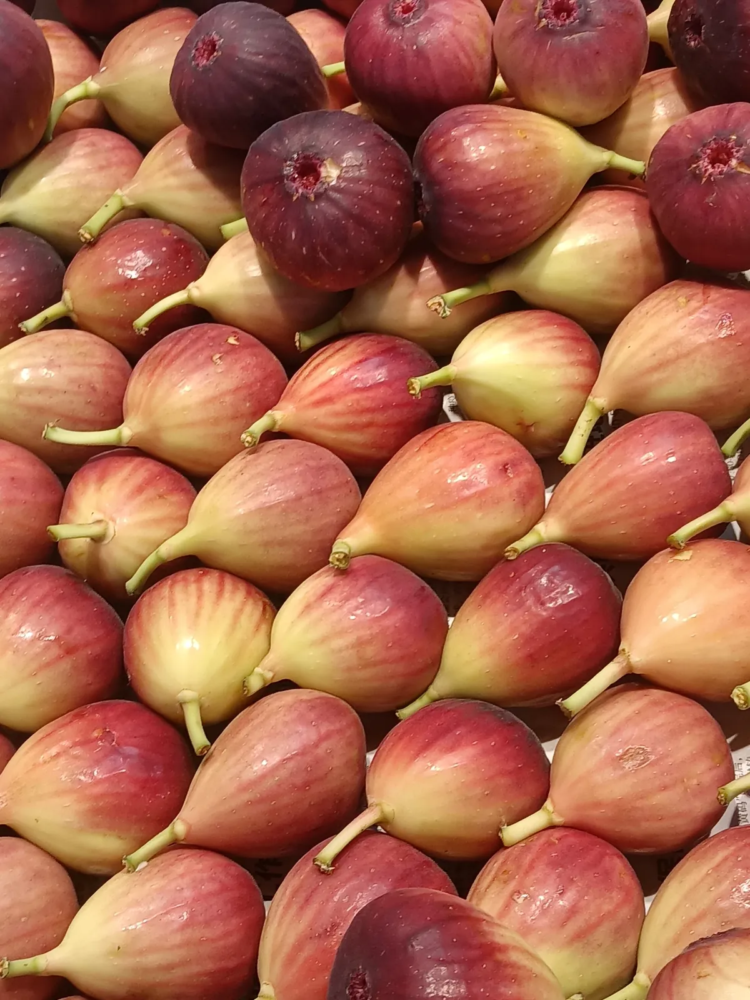
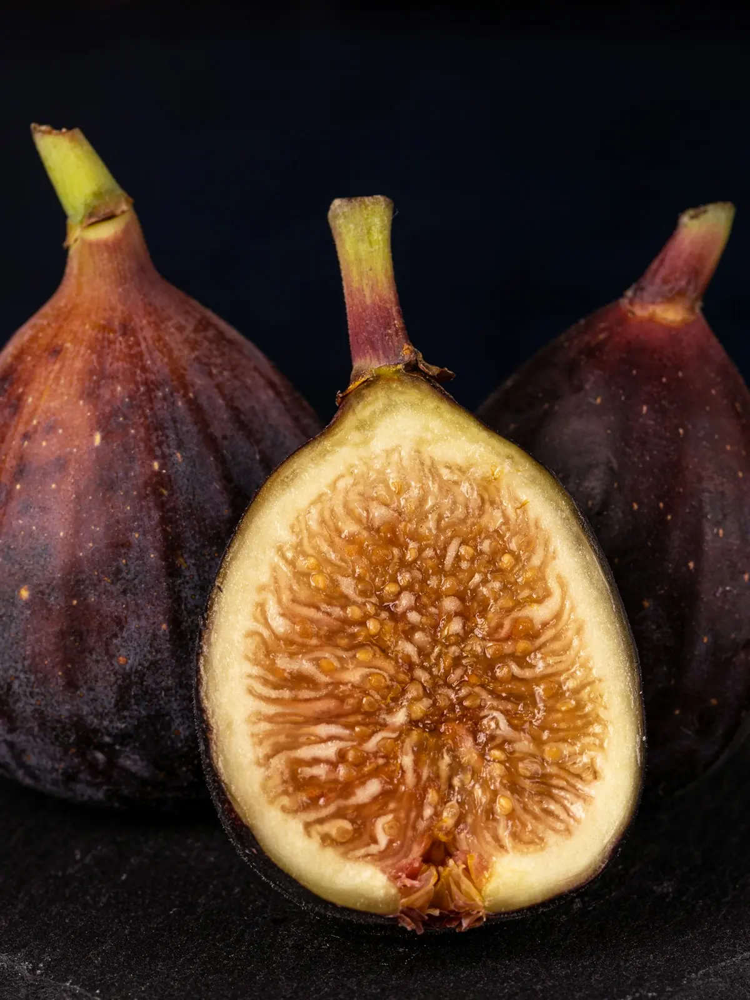
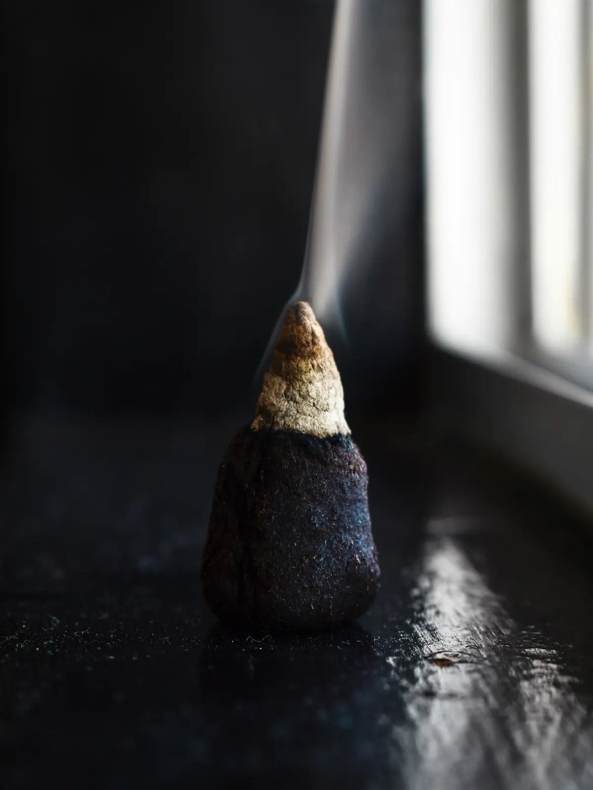
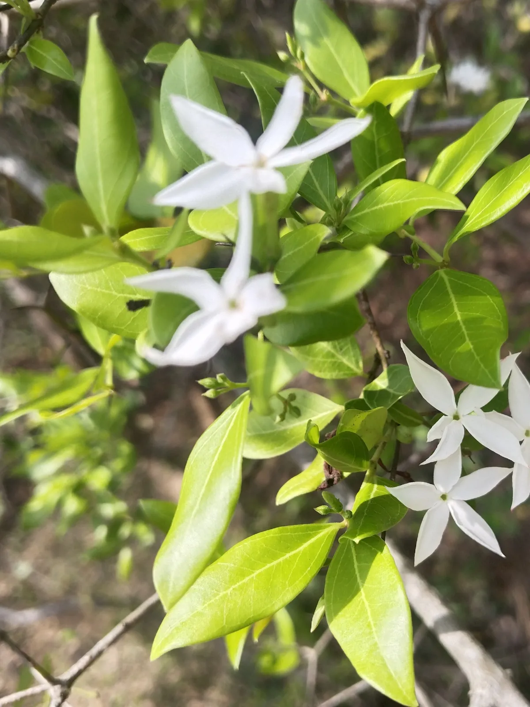
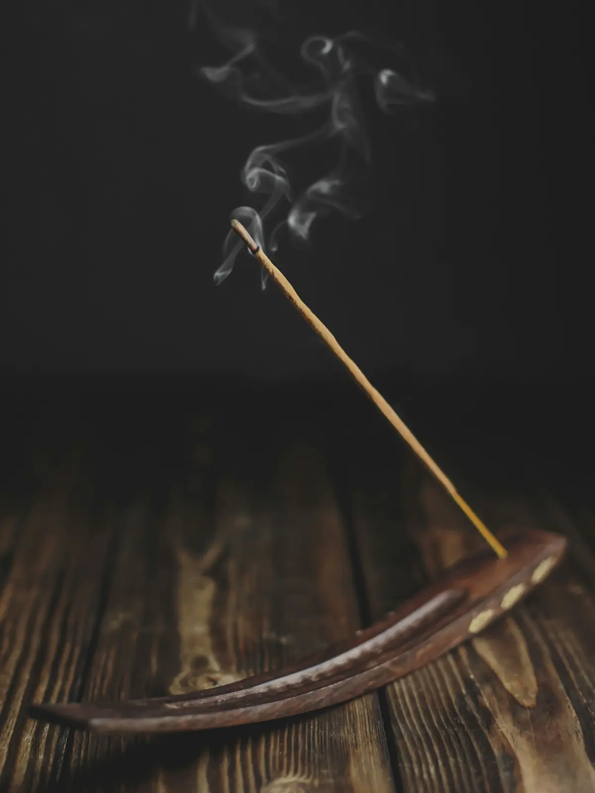

Top
The first ten minutes. Bright, volatile, gone before you notice. Bergamot, pink pepper, neroli.

Maison Fumée · eaux de parfum · a fictional house
Three eaux de parfum built on one idea: a fragrance is not an object, it is a movement. Move your cursor. The smoke answers.
Manifesto
Nothing here sits still, so neither does the page.
The collection



No. 01 / 03
A split fig left on warm wood at the end of August.
Green, milky, warm
No. 02 / 03
One cone of incense, a window open, the room going quiet.
Resinous, dry, luminous
No. 03 / 03
The flower that waits for dark before it says anything.
White floral, indolic
How a trail is built
The first ten minutes. Bright, volatile, gone before you notice. Bergamot, pink pepper, neroli.

The hours in between. Fig milk, frankincense, night jasmine. The part people remember you by.
What is still there at midnight. Cedar, labdanum, benzoin, a little musk.

The trail a perfume leaves behind you. We design for this first and work backwards.
The flacon
Specs of a fictional product, drawn for this concept.
Leave a trail